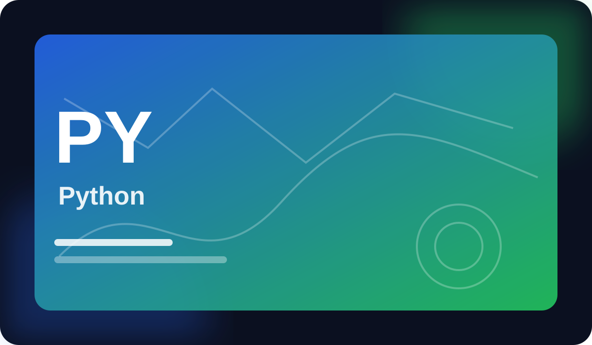
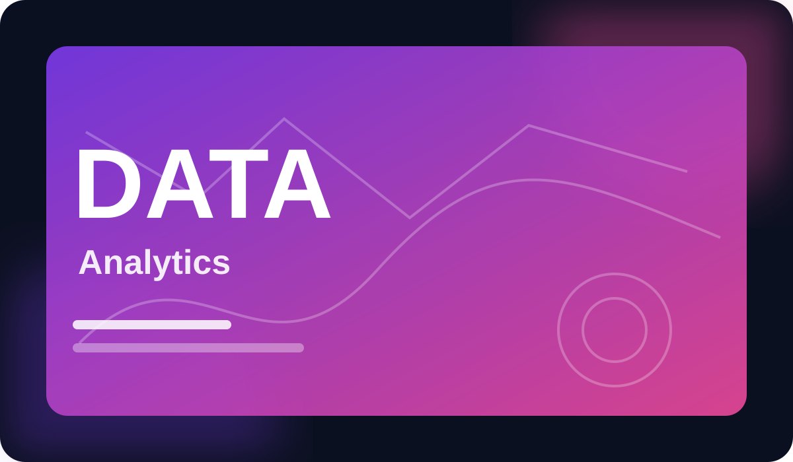

Sunday, September 13
Welcome back, learner.
A focused 25-minute session keeps your weekly goal on track.
Courses in progress3+1 this month
Learning streak12 daysPersonal best: 18
Hours learned31.47.2 this month
Certificates21 almost complete
Continue learning
View all
Python for Practical Problem Solving
68%Module 3 • Functions & reusable logic

Data Analytics: From Questions to Insights
42%Module 2 • Cleaning messy data
Learning activity
Last 7 daysMonTueWedThuFriSatSun
Weekly goal: 3 of 4 sessions complete
One focused session remains. Continue the Python course and close out the week strong.
Start a session